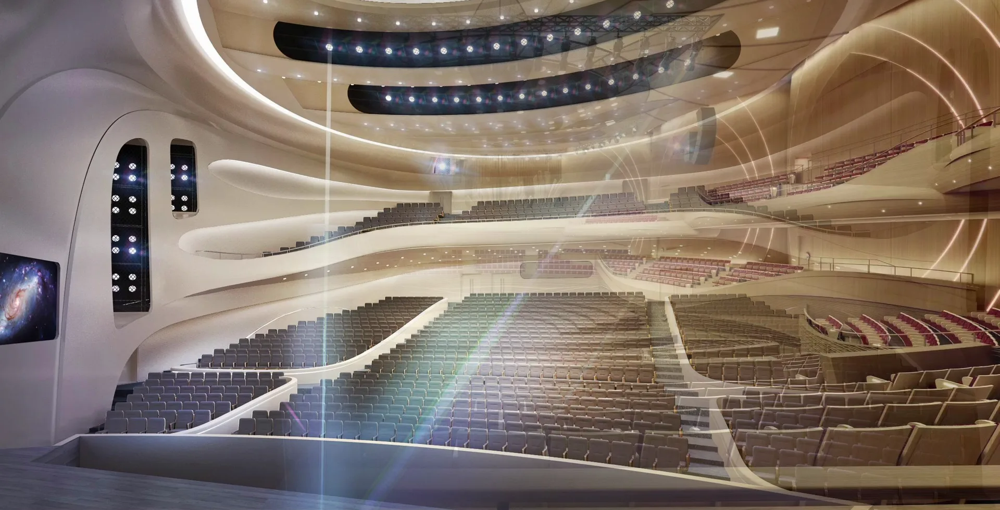
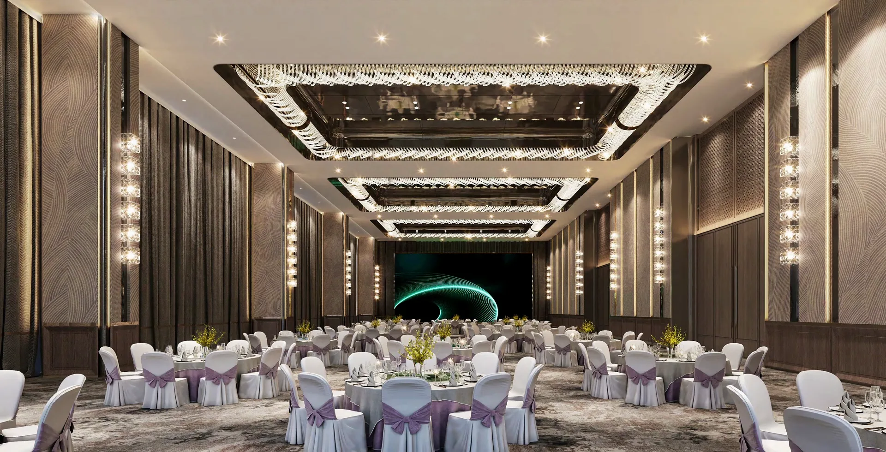
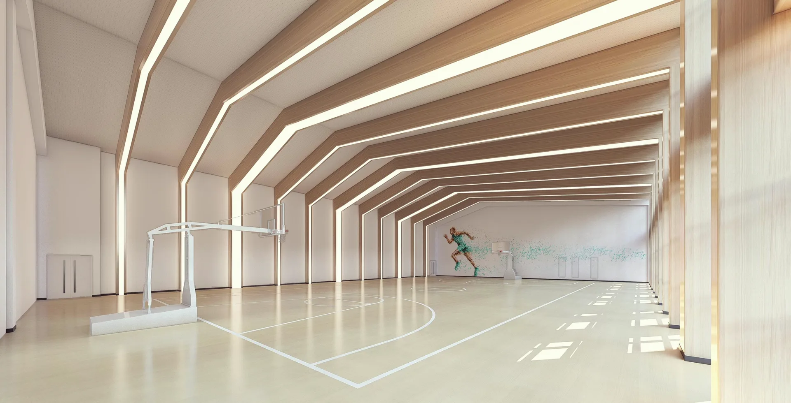
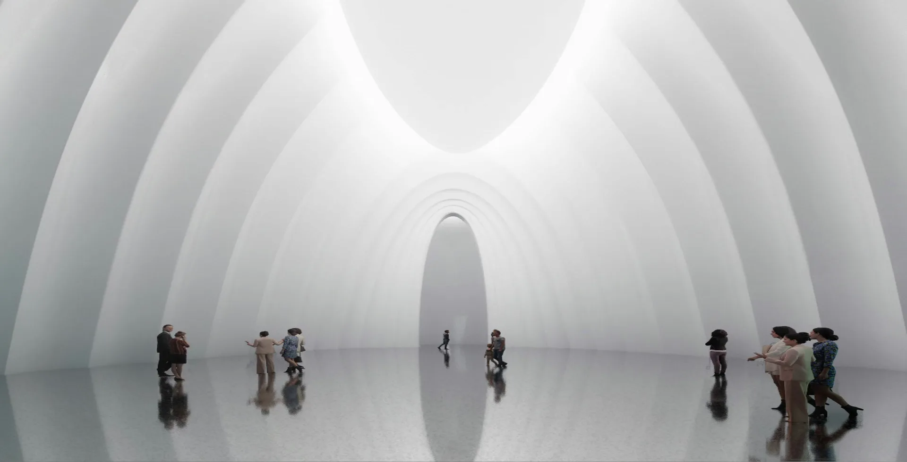
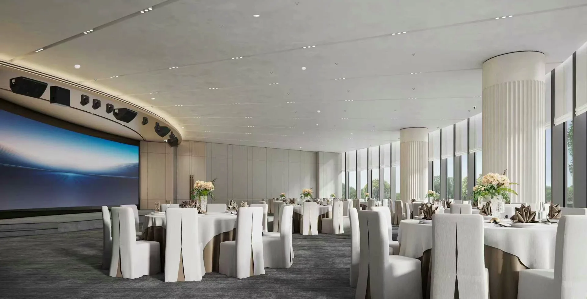

Rooms we designed, engineered and built.
The portfolio
Every room here was measured before we called it done.
Concert halls, conference centres, hotels and galleries — each delivered under one contract, from the first acoustic model to the commissioning report. The cases below are a cross-section of that work.
Select a discipline to filter, or open a case to see how the brief, the engineering and the build came together.
Index
Selected projects, 2021–2024.

Riverside Grand Theatre
View case study →
Meridian Concert Hall
View case study →
Aria Opera House
View case study →
Lakeview Grand Ballroom
View case study →
Summit Convention Centre
View case study →
Gallery of Modern Craft
View case study →
Crescent Civic Hall
View case study →
The Pavilion Hotel
View case study →In numbers
A practice measured in rooms.
Every project closes with a commissioning measurement — reverberation, clarity and background noise verified seat by seat against the model.
Have a space this hard to get right?